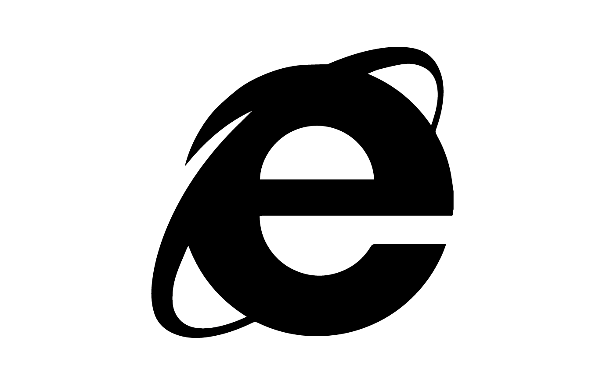

Pop-up ads or pop-ups are forms of online advertising on the World Wide Web.
[1] A pop-up is a graphical user interface (GUI) display area, usually a small
window, that suddenly appears ("pops up") in the foreground of the visual interface.
The pop-up window containing an advertisement is usually generated by JavaScript
that uses cross-site scripting (XSS), sometimes with a secondary payload that uses
Adobe Flash.[2] They can also be generated by other vulnerabilities/security holes
in browser security. Pop-ups can be used to display advertisements. A variation
on the pop-up window, the pop-under advertisement, opens a new browser window
under the active window. Pop-unders do not interrupt the user immediately, but
appear when the user closes the covering window, making it more difficult to determine
which website created them.
How to block pop-up ads
Google Chrome
1. Select Settings from the Chrome menu.
2. Typing in Popups
3. Click the Content Settings button.
4. Toggle the Pop-ups option to Blocked or delete exceptions.
Safari
1. Click on Safari on the upper left of your screen to open the drop down options.
2. Choose Preferences. Make sure "Block Pop-Up Windows is unchecked as in
the image above.
3. Click Preferences and from the menu, choose Security.
3. Make sure Block pop-up windows is NOT selected. If it is selected, click it
to deselect.
Firefox
1. Click on the Firefox button in the upper-left of your browser and click on
Options
2. Select the Content tab and make sure that “Block pop-up windows” is checked.
If it isn’t, check it.
3. Click the Exceptions button. Remove any existing exceptions.
Internet Explorer
1. Open Internet Explorer, select the Tools button , and then select Internet options.
2. On the Privacy tab, under Pop-up Blocker, select Settings.
3. Under Blocking level, set the blocking level to High: Block all pop-ups (Ctrl + Alt to override).
